import numpy as np
import matplotlib.pyplot as pl11 Ajuste de Funções
by BEM, Last update: 10/07/2023
12 Caso particular da Reta
# Vamos Ler o arquivo de entrada
x, y = np.loadtxt('exercicio_1.dat', unpack=True)# Visualizando nossos dados
pl.plot(x, y, 'k.-')
pl.show()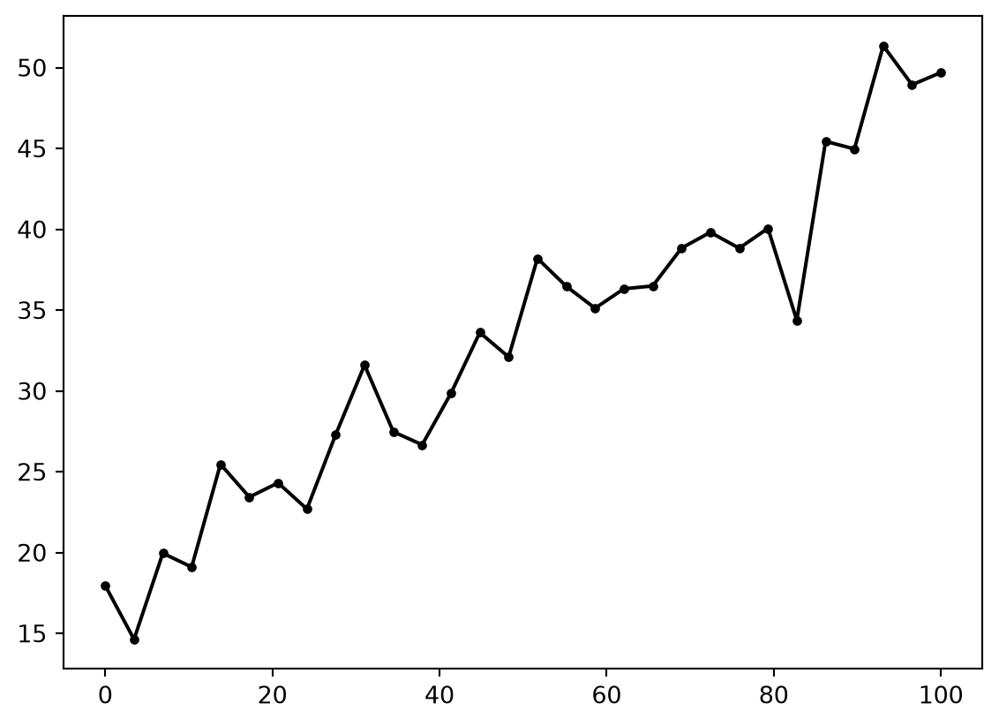
Podemos computar os coeficientes utilizando:
$ = _{i = 1}^{n}2.x_i.(ax_i + b - y_i) = 0$
$ = _{i = 1}^{n}2.(ax_i + b - y_i) = 0$
\(\therefore\)
\(a = \frac{\sum_{i = 1}^{n} x_i (y_i - \bar{y})}{\sum_{i = 1}^{n} x_i (x_i - \bar{x})}\)
\(b = \bar{y} - a\bar{x}\)
onde
\(\bar{x} = \frac{1}{N}\sum_{i = 1}^{n} x_i\)
\(\bar{y} = \frac{1}{N}\sum_{i = 1}^{n} y_i\)
a = np.sum(x*(y - y.mean())) / np.sum(x*(x - x.mean()))
print('Coeficiente Angular: ', a)Coeficiente Angular: 0.3093444729928444b = y.mean() - a*x.mean()
print('Coeficiente linear: ', b)Coeficiente linear: 17.56814695035778# Visualizando nosso resultado
pl.plot(x, y, 'k.-')
pl.plot(x, a*x + b, 'r-')
pl.show()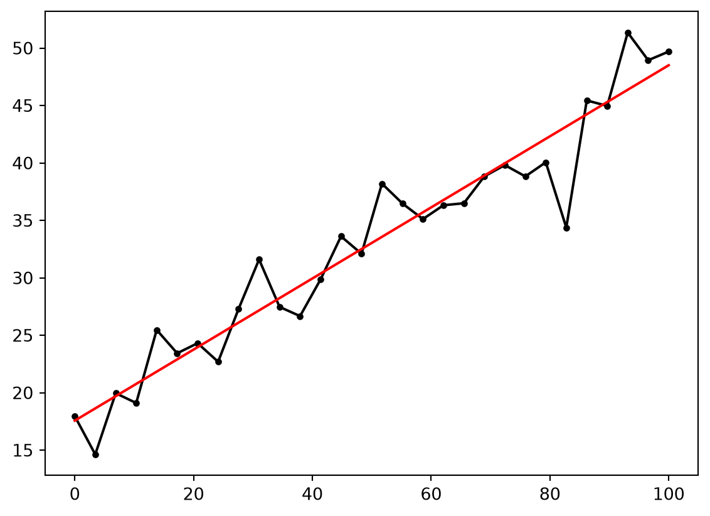
Esse foi um exemplo de um ajuste por mínimos quadrados para o caso de um ajuste simples que pode ser resolvido algebricamente. Mas como fazer de forma numérica?
12.0.1 Vamos fazer um Monte Carlo
# Primeiro, definir o nosso problema
def reta(x, a, b):
return a*x + b# Definimos alguns chutes iniciais
pl.plot(x, y, 'k.-')
pl.plot(x, reta(x, 0.5, 10), 'r-')
pl.show()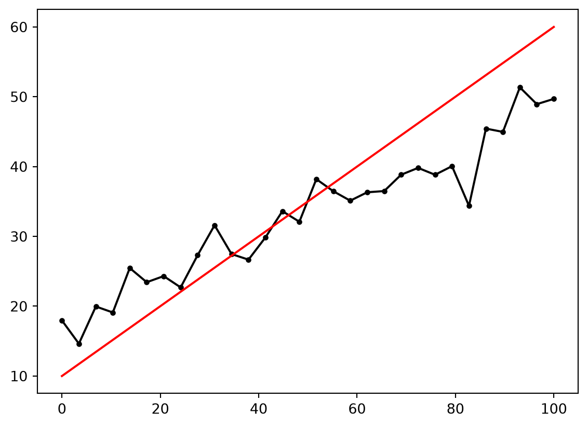
# Vamos criar valores randômicos para testar
param_a = np.random.uniform(0, 1, 100000)
param_b = np.random.uniform(0, 30, 100000)# Como estamos preenchendo o espaço de parâmetros?
pl.plot(param_a, param_b, 'k.')
pl.xlabel('a', fontsize=15)
pl.ylabel('b', fontsize=15)
pl.show()
# Cada ponto preto é uma simulação que vamos fazer de forma iterativa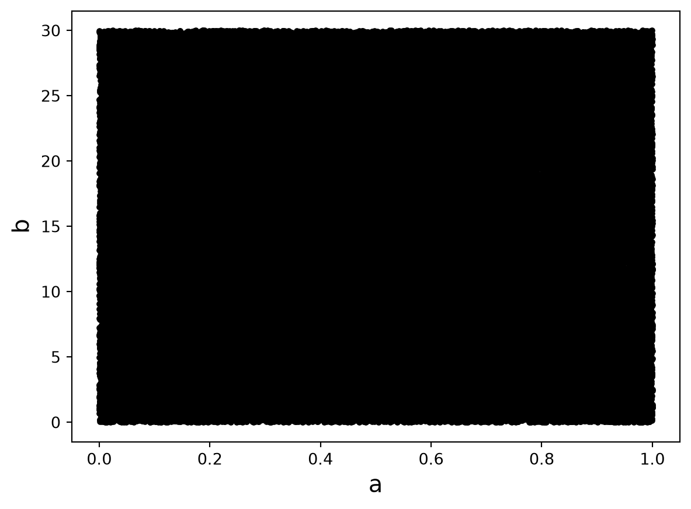
pl.plot(param_a, param_b, 'k.')
pl.plot(param_a[0], param_b[0], 'r.')
pl.xlabel('a', fontsize=15)
pl.ylabel('b', fontsize=15)
pl.show()
print(param_a[0], param_b[0])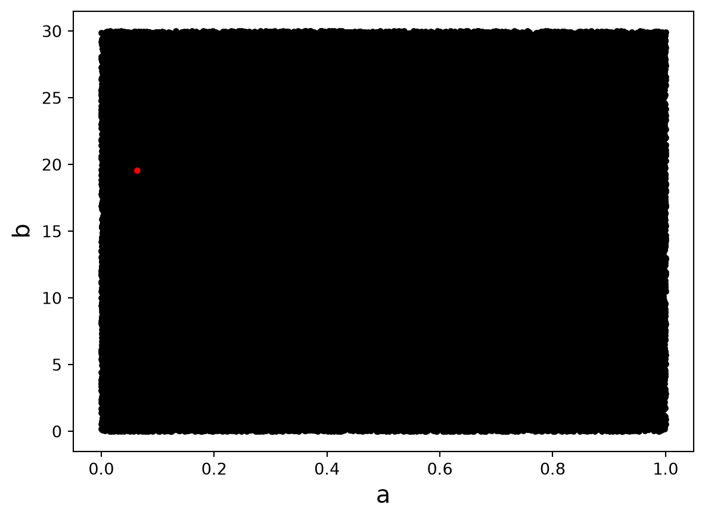
0.6589701760347689 22.65414397874114Computando um modelo e calculando o valor de:
\(S = \sum_{i = 1}^{N} (y_i - f(x_i))^2\)
y_model = reta(x, a=param_a[0], b=param_b[0])
S = np.sum((y - y_model)**2)
print('Soma dos quadrados dos Resíduos: ', S)
# Quanto maior o S, pior é o ajuste, vamos calcular S para todos os valores simuladosSoma dos quadrados dos Resíduos: 18760.743305494314S = np.array([])
for i in range(len(param_a)):
y_model = reta(x, a=param_a[i], b=param_b[i])
S = np.append(S, np.sum((y - y_model)**2))print('Valor mínimo da soma dos quadrados dos resíduos: ', S.min())
print('Melhor valor de a: ', param_a[S.argmin()])
print('Melhor valor de b: ', param_b[S.argmin()])Valor mínimo da soma dos quadrados dos resíduos: 215.59464804855546
Melhor valor de a: 0.3083657060366637
Melhor valor de b: 17.623397169447543# Definimos alguns chutes iniciais
pl.plot(x, y, 'k.-')
pl.plot(x, reta(x, param_a[S.argmin()], param_b[S.argmin()]), 'r-')
pl.show()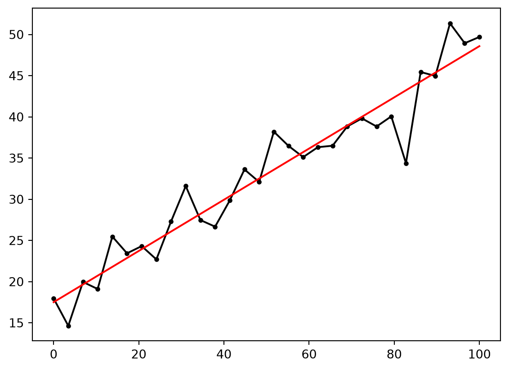
pl.plot(param_a, S, 'k.')
pl.axvline(param_a[S.argmin()], color='red', ls='--')
pl.ylim(0, 1000)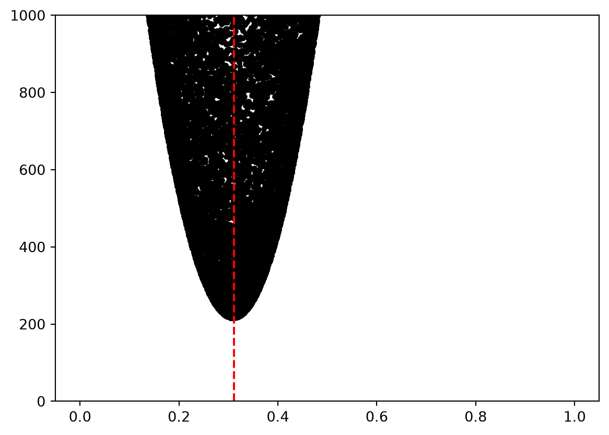
pl.plot(param_b, S, 'k.')
pl.axvline(param_b[S.argmin()], color='red', ls='--')
pl.ylim(0, 1000)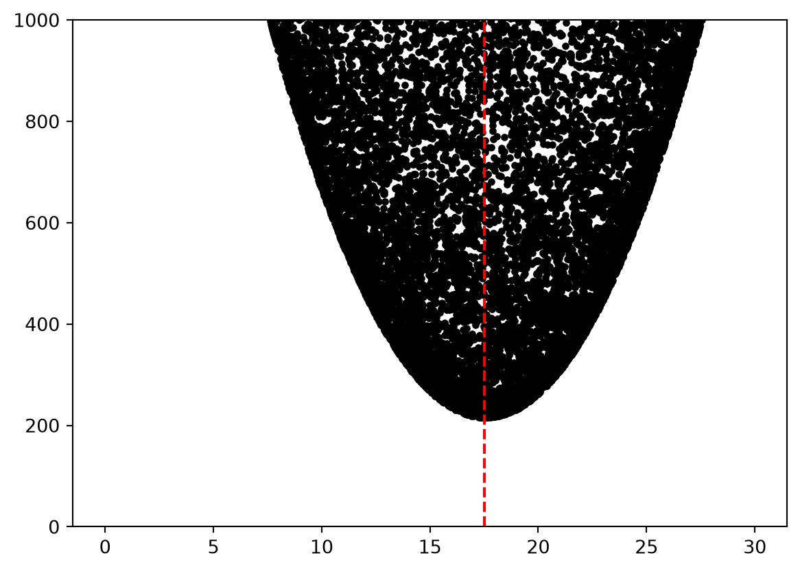
13 Exercício 2
Vamos ajustar os parâmetros da função
\(f(x) = e^{\frac{-x}{\beta_1}} + \beta_2\)
# Vamos Ler o arquivo de entrada
x, y = np.loadtxt('exercicio_2.dat', unpack=True)# Vamos criar a função que queremos ajustar
def funcao(x, beta_1, beta_2):
return np.exp(-x/beta_1) + beta_2# Visuaizando os dados
pl.plot(x, y, 'k.-')
pl.show()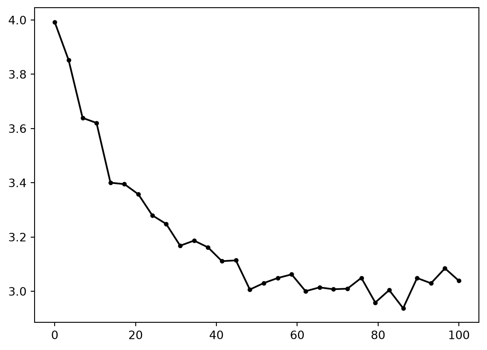
# Visualizando os dados e um modelo qualquer
pl.plot(x, y, 'k.-')
y_model = funcao(x, beta_1=1, beta_2=-4)
# Computando o valor dos mínimos quadrados
S = np.sum((y - y_model)**2)
print(S)
pl.plot(x, y_model, 'r-')
pl.show()1539.7626219543715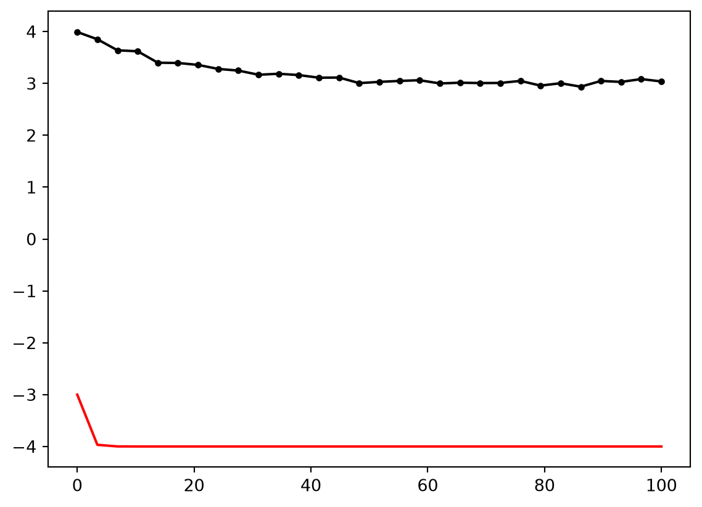
beta_1 = np.random.uniform(-100, 100, 100000)
beta_2 = np.random.uniform(-100, 100, 100000)pl.plot(beta_1, beta_2, 'k.')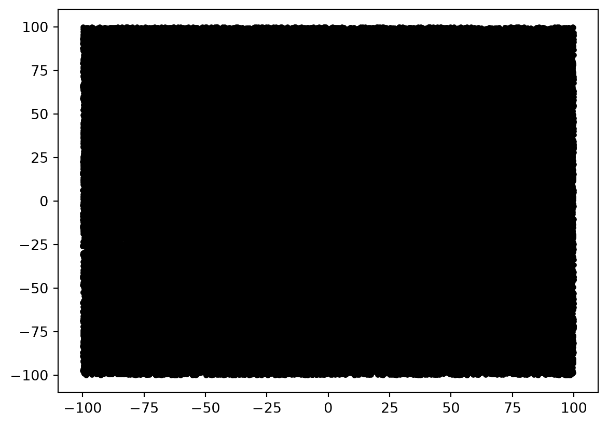
from tqdm import tqdm
S = np.array([])
for i in tqdm(range(len(beta_1))):
y_model = funcao(x, beta_1=beta_1[i], beta_2=beta_2[i])
S = np.append(S, np.sum((y - y_model)**2))
0%| | 0/100000 [00:00<?, ?it/s]C:\Users\luanx\AppData\Local\Temp\ipykernel_26748\825112861.py:3: RuntimeWarning:
overflow encountered in exp
C:\Users\luanx\AppData\Local\Temp\ipykernel_26748\3067340706.py:7: RuntimeWarning:
overflow encountered in square
9%|▉ | 9310/100000 [00:00<00:00, 92941.43it/s]
19%|█▊ | 18605/100000 [00:00<00:00, 89320.65it/s]
28%|██▊ | 27547/100000 [00:00<00:00, 82859.48it/s]
36%|███▌ | 35879/100000 [00:00<00:00, 77309.62it/s]
44%|████▎ | 43665/100000 [00:00<00:00, 72938.83it/s]
51%|█████ | 51005/100000 [00:00<00:00, 68267.53it/s]
58%|█████▊ | 57880/100000 [00:00<00:00, 58455.12it/s]
64%|██████▍ | 63926/100000 [00:01<00:00, 49896.22it/s]
69%|██████▉ | 69184/100000 [00:01<00:00, 45635.26it/s]
74%|███████▍ | 73934/100000 [00:01<00:00, 43952.04it/s]
78%|███████▊ | 78436/100000 [00:01<00:00, 41459.03it/s]
83%|████████▎ | 82643/100000 [00:01<00:00, 35010.30it/s]
86%|████████▋ | 86296/100000 [00:01<00:00, 32475.84it/s]
90%|████████▉ | 89639/100000 [00:01<00:00, 30473.19it/s]
93%|█████████▎| 92740/100000 [00:01<00:00, 28638.48it/s]
96%|█████████▌| 95630/100000 [00:02<00:00, 27144.60it/s]
98%|█████████▊| 98352/100000 [00:02<00:00, 24906.82it/s]
100%|██████████| 100000/100000 [00:02<00:00, 43129.53it/s]pl.plot(beta_1, S, 'k.')
pl.ylim(0, 10)
#pl.xlim(0, 50)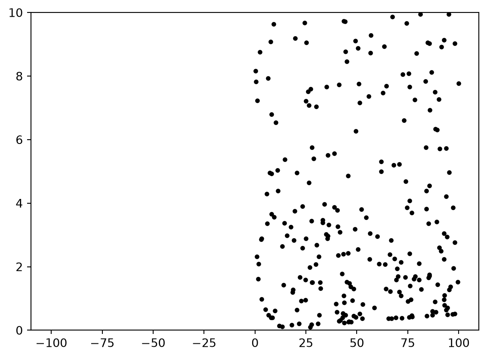
pl.plot(beta_2, S, 'k.')
pl.ylim(0, 2)
pl.xlim(0, 5)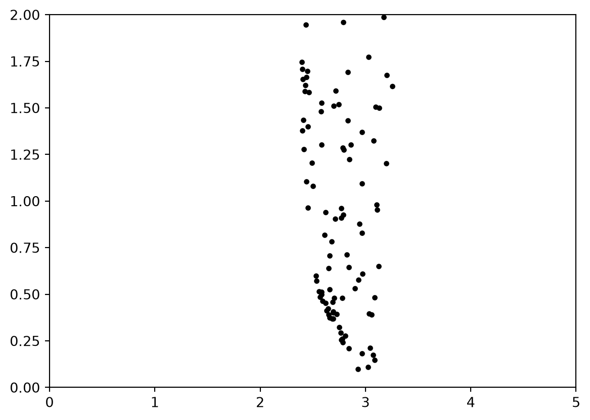
print(beta_1[S.argmin()])
print(beta_2[S.argmin()])19.73408865597584
3.0001537706436494pl.plot(x, y, 'k.-')
y_model = funcao(x, beta_1=15.446324928570547, beta_2=2.987769552921577)
S = np.sum((y - y_model)**2)
print(S)
pl.plot(x, y_model, 'r-')
pl.show()0.10738497702461611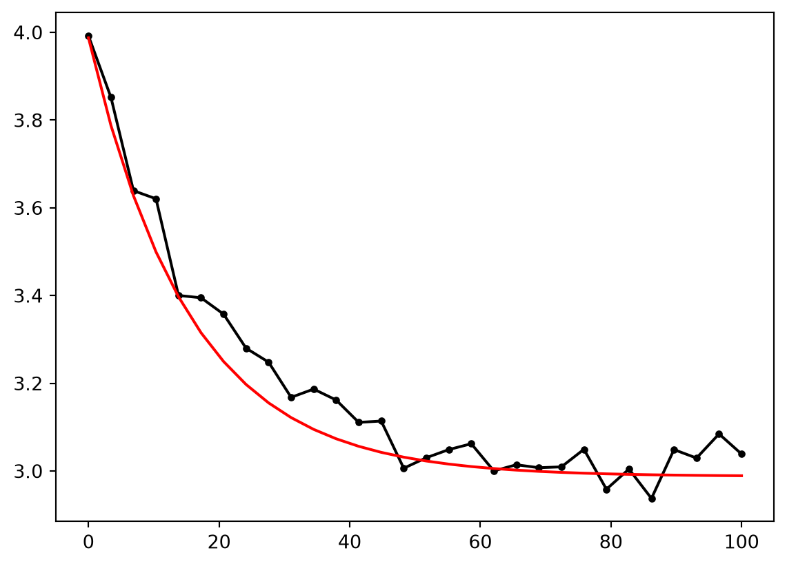
O ajuste parece OK, mas será que estamos de fato nos melhores valores?
# Refazer, agora mais próximo da solução
beta_1 = np.random.uniform(0, 100, 100000)
beta_2 = np.random.uniform(-10, 10, 100000)from tqdm import tqdm
S = np.array([])
for i in tqdm(range(len(beta_1))):
y_model = funcao(x, beta_1=beta_1[i], beta_2=beta_2[i])
S = np.append(S, np.sum((y - y_model)**2))
0%| | 0/100000 [00:00<?, ?it/s]
10%|▉ | 9948/100000 [00:00<00:00, 99025.14it/s]
20%|█▉ | 19851/100000 [00:00<00:00, 91505.53it/s]
29%|██▉ | 29039/100000 [00:00<00:00, 85385.13it/s]
38%|███▊ | 37622/100000 [00:00<00:00, 79564.48it/s]
46%|████▌ | 45630/100000 [00:00<00:00, 72469.81it/s]
53%|█████▎ | 52962/100000 [00:00<00:00, 65970.70it/s]
60%|█████▉ | 59658/100000 [00:00<00:00, 56108.25it/s]
65%|██████▌ | 65494/100000 [00:01<00:00, 48679.23it/s]
71%|███████ | 70598/100000 [00:01<00:00, 46992.92it/s]
75%|███████▌ | 75434/100000 [00:01<00:00, 44255.94it/s]
80%|███████▉ | 79939/100000 [00:01<00:00, 41137.18it/s]
84%|████████▍ | 84104/100000 [00:01<00:00, 35447.82it/s]
88%|████████▊ | 87761/100000 [00:01<00:00, 33708.21it/s]
91%|█████████ | 91192/100000 [00:01<00:00, 31819.81it/s]
94%|█████████▍| 94404/100000 [00:01<00:00, 29938.73it/s]
97%|█████████▋| 97410/100000 [00:02<00:00, 27621.66it/s]
100%|██████████| 100000/100000 [00:02<00:00, 45099.83it/s]pl.plot(beta_1, S, 'k.')
pl.ylim(0, 1)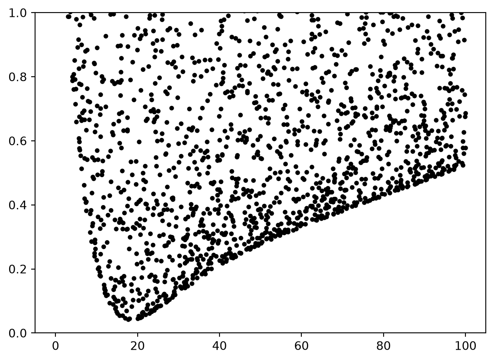
pl.plot(beta_2, S, 'k.')
pl.ylim(0, 1)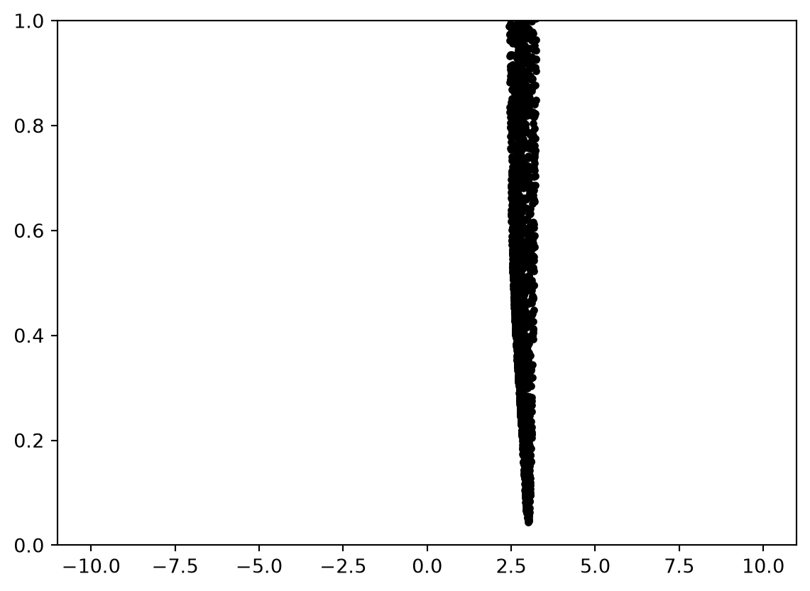
print(beta_1[S.argmin()])
print(beta_2[S.argmin()])17.723307000110932
3.0085233009106105pl.plot(x, y, 'k.-')
y_model = funcao(x, beta_1=18.77266155859759, beta_2=2.9917787435681813)
S = np.sum((y - y_model)**2)
print(S)
pl.plot(x, y_model, 'r-')
pl.show()0.04337814021210659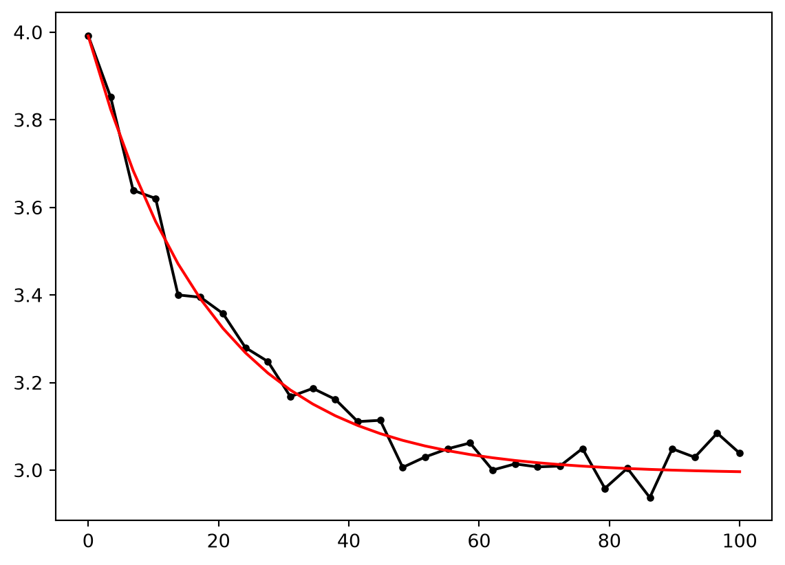
Quanto mais modelos fizermos mais próximos do resultado real estaremos!
14 Como fazer com o Scipy
from scipy.optimize import curve_fit# Funçao Curve_fit fará o ajuste para você de forma eficiente
param, error = curve_fit(funcao, x, y)print('Valores: ', param)
print('Incertezas: ', np.sqrt(np.diagonal(error)))Valores: [18.4336622 3.0006474]
Incertezas: [1.08368818 0.01240034]15 Isso é tudo
By BEM